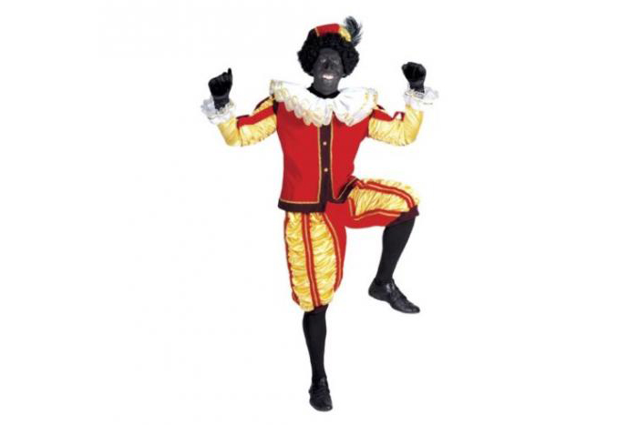

Le compagnon de saint Nicolas, le père Fouettard a pour prénom Ruppelz
Les compagnons de saint Nicolas sont divers personnages ou figures régionales qui accompagnent le saint lors de sa fête en Europe centrale et occidentale. Ces personnages agissent comme antagonistes au saint patron qui distribue des cadeaux le 6 décembre, ou le 19 décembre pour l'Église orthodoxe utilisant le calendrier julien, aux enfants sages, menaçant de fouetter, punir ou enlever les enfants désobéissants. Jacob Grimm (Deutsche Mythologie) a associé ce personnage à l'esprit du foyer pré-chrétien (kobold, elfe) qui pourrait être bienveillant ou malveillant, mais dont le côté malicieux a été souligné après la christianisation. Le distributeur de cadeaux associé aux elfes a des parallèles dans le folklore anglais et scandinave et est indirectement lié au lutin de noël du folklore américain1.